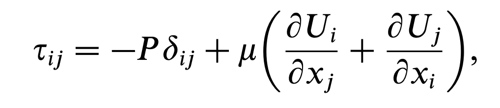
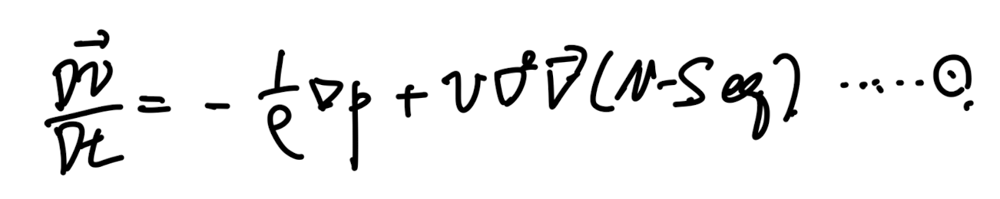
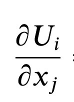

Fluid dynamics에서 Flow종류를 다양한 기준을 통해서 category를 분류한다.
그 중에서
Reynolds number
가 큰 flow를 우리는
Turbulence flow
라고 부른다.
(이와 반대로 작은 flow를 우리는 Laminar Flow라고 칭함)
'지금 배우고 있는 모든 이론들은 결국
물리적 의미를
단지 수식으로 표현한 것이다'
그렇다면 위
Reynolds number
와
Turbulence Flow
는 어떠한 물리적 의미를 함축하고 있을까?
![[Turbulent] ch2 - The Equation of Fluid motion](./images/img-001.png)
Defintion of Reynolds Number
여기서 Reynolds number이
작을수록
점성력이
지배적이어서,
유동이
안정적이고
정돈된
Laminar flow
가
유지된다.
하지만
Reynolds
수가
임계값을
넘어서면,
관성력이
우세해져
유동이
불안정해지고
난류( turbulence)
상태로
진화하게
된다.
여기서
점성력의
물리적 역할은
'어떠한 속도차이가 나는 두 유체입자의 속도를 맞춰주는 브레이크 역할을 한다'
따라서, 속도차이로 인해 발생하는 현상들을 억제하는 역할을 한다는 것.
위
점성력의 역할
과
안정(Laminar)-불안정(Turbulent)
이라는 대비 개념을 가지고,
Boundary layer flow on the flat plate를 밑에 그림에서 살펴보자.
![[Turbulent] ch2 - The Equation of Fluid motion](./images/img-002.png)
Boundary layer on the flat plate.
어떠한 판이 바닥에 깔려있고, 그 판위에 오른쪽(+x)방향으로 유체를 불어 넣어준다.
여기서 plate와 유체와의 viscous shear stress(마찰력으로 인한 stress)로 인해서
plate부근에서 유체의 속도는 감소한다. (정확히는 모멘텀이 손실된다)
초기에는
판과의 점성
마찰 로
인해 Boundary Layer이
형성되고,
이
속도
구배가
큰
층에서
층류가
유지된다.
따라서, 밑의 velocity profile을 얻게 된다.
![[Turbulent] ch2 - The Equation of Fluid motion](./images/img-003.png)
'안정적' 의 의미는 perturbation이 적다 즉 층과 층 사이의 교란이 발생하지 않는다.
그러나
경계층이
발달하면서
유동은
점차
작은
교란들이
증폭되며
transition zone
을
거쳐
결국
난류
로
넘어간다.
이때
난류는
단순히 “
섞이는
유동”
이
아니라,
무작위적이고 3 차원적인 에너지 전달 구조
를
가지며,
시간과
공간적으로
매우
복잡한
움직임을
보이기
때문에
통계학적 수단 으로만 예측
이
가능하다.
![[Turbulent] ch2 - The Equation of Fluid motion](./images/img-004.png)
다시 간단한 언어들로 표현하면,
교란들의 발생을 (점성력 >> 관성력 인 경우)는
점성효과로
인해서 억제할 수 있지만(Laminar Flow),
(관성력 >> 점성력인 경우)는 교란을 억제하지 못하여 random motion을 띄게 된다.
그게 바로 Turbulent Flow.
고체의 벽에 의한 점성으로 난류가 발생하는 것(Wall-bounded flow)과,
벽 없이 점성으로 난류가 발생하는 기준(Free shear flow)으로 우리는
flow를 다음과 같이 구분할 수 있다.
Free shear flow
-jet, wakes, shear layer
Wall-bounded flow
- Boundary layer flow, channel flow, pipe flow.
여기서 turbulent flow를 분석하기 위해,
governing equation들을 이번 글에서는 살펴보고
다음 블로그에서는 통계학적 분석을 자세하게 살펴보자.
1. mass conservation -> Continuity Eq.
![[Turbulent] ch2 - The Equation of Fluid motion](./images/img-005.png)
rho: density , U: Velocity
여기서 specific volume이 변하지 않으면(Incompressible Flow),
즉 density가시공간에 따라 일정하다면,
우리는 위 식을 통해 다음 관계식을 얻을 수 있다.
![[Turbulent] ch2 - The Equation of Fluid motion](./images/img-006.png)
Divergence Free condition, Solenodial Flow.
2. Linear Momentum conservation
![[Turbulent] ch2 - The Equation of Fluid motion](./images/img-007.png)
pshi -> body force potential.
유체역학 시간에, F = ma에서 body, surface force로 분류한 후,
infinitsimal small fluid 에 대해서 우리는 위 모멘텀 보존 식을 유도하였다.
여기서 Newtonian fluid 가정을 한다면, 우리는 shear stress tensor를 다음과같이,
압력 과 strain rate 로 나타낼 수 있다.

Newtonain fluid shear stress tensor.
따라서, linear momentum conservation 식에 위 newtonian fluid shear stress를 대입하면,
다음 식이 유도되고, 여기에 Incompressible flow 가정도 추가해주면,
다음의 Navier's Stokes 방정식이 유도된다.
![[Turbulent] ch2 - The Equation of Fluid motion](./images/img-009.png)
여기서 우리가 압력과 body force potential를 하나의 modified pressure로 정의하면,
![[Turbulent] ch2 - The Equation of Fluid motion](./images/img-010.png)
simplified NS 방정식이 유도된다.
![[Turbulent] ch2 - The Equation of Fluid motion](./images/img-011.png)
보통 두가지 boundary condition이 가장 많이 쓰이는데,
1. impermeability condition(벽과 수직방향의 속도성분 = 0 )
2. no slip condition(벽과 수평방향의 속도성분 = 0)
따라서, 벽에서의 속도벡터 자체가 0.
![[Turbulent] ch2 - The Equation of Fluid motion](./images/img-012.png)
No visocus effect -> Inviscid Flow. 의 가정이 추가된 경우 우리는
diffustion term을 날려버려 아래와 같이 두가지 term만 남길 수 있고,
밑의 식을 Euler's Equation이라고 칭한다.
![[Turbulent] ch2 - The Equation of Fluid motion](./images/img-013.png)
Inviscid Flow assumption -> Euler equation
여기서 하나의 식을 더 유도해보자. 먼저 incompressible NS 방정식은 아래와 같다.

그리고 1식을 divergence를 양변에 진행해준다. 연산을 편하게 하기 위해. Index notation을 사용하자.
![[Turbulent] ch2 - The Equation of Fluid motion](./images/img-015.png)
여기에, continutiy Eq(incompressible)가정을 추가해주면 우리는 4번의 Possion Equation을 도출 할 수 있다.
![[Turbulent] ch2 - The Equation of Fluid motion](./images/img-016.png)
4번 방정식을 유도한 이유는, 우리가 속도와 압력을 가지고 있을때 이 데이터가
continutiy eq와 linear momentum Eq을 동시
에
만족하는지를 알 수 있다는 것이다.
지금까지는 속도장에 관한 식만 살펴보았지만, 이것을 일반화하여, 우리는 Transport Equation으로 확장해보자.
Conserved Passive scalar function
Φ(x,t)에 대해서 보존 법칙식은 아래와 같다.
![[Turbulent] ch2 - The Equation of Fluid motion](./images/img-017.png)
여기서 아무 scalar function이면 안되고,
Conserved: 전체 system의 particle이 가지고 있는 scalar값의 총량은 보존
Passive: 다른 material property, velocity 등등 particle의 다른 값에 영향을 주지 않는다.
두 성질을 지닌 scalar function이어야 한다.
한가지 더 중요한 성질은
boundness
이다. scalar함수의 domain(x,t)에 대해서
scalar함수값의 범위는 유한하다는 것이다.
![[Turbulent] ch2 - The Equation of Fluid motion](./images/img-018.png)
strain rate tensor

유체역학 시간에 계속해서 나오는 strain rate tensor,
shear stress와 비례하는 항이기 때문에 계속해서 나올 수 밖에 없다.
strain rate tensor를 symmetric, antisymmetric part이렇게 2가지로 나누면, 아래와 같다.
![[Turbulent] ch2 - The Equation of Fluid motion](./images/img-020.png)
symmetric deviatoric rate of strain tensor
![[Turbulent] ch2 - The Equation of Fluid motion](./images/img-021.png)
antisymmetric rate of strain tensor.